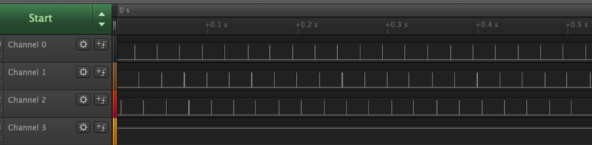

Introduction
The objective of this project is to start familiarizing ourselves with programming real time systems using a time-based architecture, and interfacing with peripherals using an Arduino microcontroller. Some of the peripherals include photo transistors, servo motors, light emitting diodes (LED), an lcd display, and bluetooth modules.
The goal at the end of this project is to use bluetooth communications to control two servo motors and the state of an LED connected to one microcontroller, from a joystick connected to a separate microcontroller, using a real time scheduler.
Although a relatively basic task, this project offers insights into the types of problems that arise when interfacing time-sensitive software with hardware components.
Hardware Overview
The hardware components used for this project are as follows:
- 2 Arduino Mega 2560
- 2 Tower Pro MG90S Servo Motors
- 1 Pan and Tilt Kit
- 1 PS2 Joystick
- 1 Laser (LED)
- 1 LCD Display
- 1 3.3 / 5 V Power Supply
- 2 Breadboards
- 2 JY-MCU Bluetooth Modules (One HC-06, one HC-05)
- 1 Photocell
- 1 10K resistor
- 1 1K resistor
- Jumper wires
Arduino Mega 2560
The Arduino Mega is a multi-purpose microprocessor with an abundance of I/O pins, for the biggest and most demanding of projects [1]
- Operating Voltage 5V
- Input Voltage (recommended) 7-12V
- Input Voltage (limit) 6-20V
- Digital I/O Pins 54 (of which 15 provide PWM output)
- Analog Input Pins 16
- DC Current per I/O Pin 20 mA
- DC Current for 3.3V Pin 50 mA

Tower Pro MG90S Servo Motors [2]
- Torque(kg)(4.8v) 1.8
- Speed(sec/60deg) 0.1

Laser Diode
We used a noname laser diode with two leads, a Vin (red wire) and a Ground (blue wire). This laser draws ~15mA, so it can be driven directly by the microcontroller.
Pan and Tilt Kit
We used a 3D printed pan and tilt kit that houses two servo motors, one for each direction. There is also a shelf on the top to mount the laser module.
LCD Shield Display (DFR0009)
An LCD shield that plugs into the top of the Arduino Mega. Arduino has a library to interface with the display.
PS2 Joystick
A PS2 joystick is used to control the motion of the pan and tilt servo motors. The range of analog values read from the joystick is 0-1024, both in the x and y direction. The joystick has 5 pins:
- VCC (5V)
- Ground
- X-axis
- Y-axis
- SW (Click)
The X- and Y-axis pins output an analog value corresponding to the position of the joystick. The SW pin outputs a digital value corresponding to the state of the button built into the joystick.

Power Supply
The power supply has the option to output either 3.3 or 5 volts, depending on the position of the jumpers on the power supply. It has 4 power pins and 4 ground pins, and is powered via a port that connects to a wall adapter.
Breadboards
Given the temporary and iterative nature of this project, breadboards are an ideal candidate for connecting all these hardware components. We used two breadboards, one full sized (60) and one half sized (30 rows).

Jumper wires
Since we used breadboards to connect the hardware components of this project, we also needed to use jumper wires to actually make the connections. Two different kinds of jumper wires were used: male-to-male and male-to-female.

2 JY-MCU Bluetooth Modules (one HC-06, one HC-05)
These two bluetooth modules are very similar. They both have versions that come with either 4 or 6 pins. For this project, only 4 pins are used: VCC (5V), Ground, Rx, and Tx. The RX and TX are used for UART communication between the microcontroller and the bluetooth chip. The HC-06 module is able to be configured as either a master or a slave, whereas the HC-05 module does not support the master role and must be used as a slave. Both modules can have their names and PINs configured.

Photocell
A photocell is essentially a resistor whose resistance changes inversely proportional to the amount of light its surface it subjected to. In tandem with a pull-up resistor, the output of a photocell can be read in as an analog input.

Software Overview
Project 1 uses the core Arduino libraries to interface with the servo motors and avr ADCs, so for the sake of simplicity we used the Arduino IDE to develop and upload the code. The core Arduino libraries are written in C++, so the project implementation is also written in C++; however only C features were used. In addition, the Time Triggered Scheduler (TTS) from the UVic mechatronics lab website was incorporated into phase 2 [3].
Git was used to facilitate collaboration when implementing the software for Project 1.
The software sections of Phase 1 and Phase 2 go into more detail about the types of problems solved using software and the methods used to solve them, as well as some of the fundamental design decisions made throughout the implementation of Project 1.
Phase 1
Phase 1 of this project involved controlling hardware from a single base station, using wired connections and a single arduino. The arduino core libraries were used in combination with a single polling loop, without the use of any time-triggered scheduler. Phase 1 required that the pan and tilt motors be controlled by the movement of a joystick, and that the laser be controlled by the clicking of that joystick. It also requires that the photocell recognizes when it is being hit by a laser. The last piece of Phase 1 is displaying the state of the joystick and the photocell on an LCD display.
Hardware
The hardware for phase one consists of 3 sources of input: the joysticks analog movements along the X and Y axis, the analog value of the photocell, and the digital state of the joystick’s button.
It also consists of 3 outputs: the laser, the pair of servo motors used to drive the pan and tilt, and the LCD display.
Power Supply
Since we using an LCD shield that sits on top of the Arduino, we do not have access to the 5V power pin of the Arduino. To remedy this, we used an external power supply to provide power to all the components that would otherwise have been powered directly from the Arduino 5V pin.
The power supply plugs directly into the wall. The jumpers are configured such that the power supply will supply 5V. One of the power pins as well as one of the ground pins are each connected to a different row of the breadboard.
We also made a connection between the row with the power supply’s ground and one of the Arduino’s ground pins. This is to ensure that all components share the same ground reference.
Joystick
The joystick’s VCC and Ground pins connect to the rows of the breadboard that are connected to the 5V output and ground of the Arduino.
The X and Y pins of the joystick connect directly to analog input pins on the Arduino. These values can be read in directly without scaling, and show values from 0 - 1024 on each axis.
The digital SW pin, the pin detailing the state of the joystick’s button, is not as simple to read as the analog axis pins. It must be connected to a pull-down resistor. The SW pin should connect both a 1K resistor and a digital input pin on the Arduino. The other side of the resistor should connect to 5V.
When the button is not pressed in, the digital pin connected to the SW pin will be HIGH, since the path of least resistance is through the resistor and directly into the digital pin. When the button is pressed, the digital pin is connected to ground inside the joystick, pulling the pin reading down to LOW.
Figure 1: Wiring Diagram for PS2 Joystick Figure 2: Joystick Internal Schematic [4]Photocell
Similar to the joystick, the photocell also requires a pull-down resistor. One side of the photocell is connected directly to the 5V pin of the Arduino. The other side is connected to a row of the breadboard that connects to both a 10K resistor, and an analog in pin on the Arduino. The other side of the 10K resistor is connected to ground.
The resistance of the photocell in the dark is high, and it decreases as it is subjected to more light. This means that as more light hits the photocell, the total resistance of the system decreases, allowing more current to pass through into the analog in pin used to read the value of the photocell.
OHM"S LAW
Figure 3: Photocell Wiring DiagramLaser
Since the laser draws less than 20 mA, we can drive it directly from the board, making it simple to wire up. It only has two leads, a red and a black. The red lead connects to a digital out pin that will control the state of the laser, and the black lead connects to ground.
Figure 4: Laser Wiring DiagramServo Motors
Each servo motor has 3 wires: brown, red, and orange. The brown wire is Ground, red is power (5V), and orange is signal. The ground and power wires are connected to the breadboard in their corresponding ground and 5V rows, and the signal wires are connected directly to PWM pins on the Arduino.
LCD Shield
The LCD shield plugs directly into the top of the Arduino. A couple of the pins on the shield are labeled the same as the Arduino pins, so those go together and line the rest up.
Figure 5: Phase 1 Complete Wiring DiagramSoftware
The code for phase 1 has 5 main tasks, two of which involve reading external values, while the other three use those values to update the state of the peripheral motors, laser, and lcd. These tasks are performed in sequence in the main Arduino loop, with a delay of 50 milliseconds at the end of each loop, to enforce a rough sampling rate of 20Hz.
While these tasks are performed in sequence in the phase 1 code, they are described in a modular nature here as the descriptions still apply to the phase 2 code. While theoretically fewer tasks could have been used as most operations are dependent on the sampling of the joystick values, the tasks were separated to adhere to the philosophy of the time-triggered scheduler used in phase 2.
An initial sampling rate of 20 Hz was decided on by considering the rate at which the values of any of the peripherals could reasonably change. Since the joystick is human controlled, we decided it could only change (including the joystick’s click) 10 times per second. To be safe we doubled that, settling on a sampling rate of 20Hz. This sampling rate is tested and justified in phase 2.
Reading Joystick
The analog voltage for the X and Y position of the joystick is read and passed through an exponential moving-average filter. In addition, the digital value of the joystick button was read. Because of the low sample rate, no de-bouncing was needed for the button. For the exponential filter on the joystick positions, a 90 percent weight is applied to the previous value, corresponding to a weight of 10 percent of the current value. This filter proportion is designed to maximize the smoothness of control over the motors. While no linearization was needed for project 1, some form of linearization will be necessary for project 3 to obtain more precise control of the laser attitude.
In addition to filtering, we discarded joystick readings that were near the center of either access, creating a deadzone of approximately ∓ 25 increments in either direction. This was necessary to ensure smooth servo control as the joystick readings were noisy in this range.
Photocell
The second task reads the analog value of the photocell. This value is then stored for later use in another task, where it will be written to the LCD screen. After some testing, it was observed that given the resistor used (described in the hardware section of phase 1), the photocell reads ~85 in a well lit room, ~12 when it is cupped by a hand, and ~600 when a laser shines directly on it. With this information, a “hit” threshold of 350 was used to determine whether or not the photocell was being hit by a laser.
Servo Control
The third task is responsible for controlling the pan and tilt servo motors. It scales the filtered values read from the joystick to incremental relative position commands added to the absolute position of the servos, which is measured in degrees in the range 0 to 180. Relative control of the servos allowed for much more precise movements than absolute control would have, as the joysticks are not precise enough to achieve a specific position. The arduino Servo library was used to achieve the correct pulse width modulation necessary for servo control.
Laser Control
The fourth task takes the button state, decides whether the laser should be on or off, and then writes the corresponding value to the laser. It sets the laser pin HIGH if the button is pressed, and LOW if it’s not.
LCD Display
The fifth and final task is writing the filtered X and Y values from task 1, and the photocell reading from task 2, to the LCD display. The absolute position of the joystick in both the X and Y directions are printed on the LCD, as well as whether or not the photocell reading is above the “hit” threshold. The arduino LiquidCrystal library was used to interface with the LCD shield display.
An issue that we encountered when programming the LCD shield was incorrect characters being rapidly printed to the screen. While this initially appeared related to the frequency of screen updates, in reality it was caused by an unnoticed buffer overflow when formating the joystick data to be printed. This bug highlights the difficulty in debugging embedded code.
Phase 2
The major change in the second phase of this project involved the addition of wireless communication of joystick information via bluetooth. This required that the single station from phase one be split into a separate base station and remote station that would interface with bluetooth.
The base station was required to have the joystick, LCD screen, photocell, and a bluetooth master module. The remote station contained the servo motors, laser, and a bluetooth slave module. The base station read in the values from the joystick X and Y axis and button, and the photocell, wrote them to the LCD screen, and sent the data to the remote station. With that data, the remote station controls the output peripherals (servos and laser) accordingly.
In addition, both the base and remote stations were required to schedule their tasks using a Time-Triggered Scheduler (TTS) instead of a polling loop. The frequency and periods of each tasks were considered carefully, with the objective of minimizing CPU utilization, while maintaining full functionality.
Figure 6: Base Station Block Diagram Figure 7: Remote Station Block DiagramHardware
The only hardware that had to change from phase one to phase two, with the exception of moving some of the peripherals over to another breadboard and Arduino, is the inclusion of the bluetooth modules.
The extra components for phase 2 are an extra Arduino, an extra breadboard, and two bluetooth HC-05/06 modules.
Wiring diagrams for the complete remote and base stations can be seen in figures 8 and 9 respectively.
Figure 8: Remote Station Complete Wiring Diagram Figure 9: Base Station Complete Wiring DiagramBluetooth HC-05/06 Modules
We configured our HC-06 to be the bluetooth master, and the 05 to be the slave. The configuration process involves setting the name, pin, and role of each module. The commands for each of these configuration steps were provided to us as a reference.
The PIN that is set on these two modules is what tells them to communicate with each other, as opposed to any of the other powered modules in the room at the time. With that in mind, it was important to pick a PIN that other groups would likely not use themselves.
The bluetooth module communicates over UART (serial). The VCC and ground pins connect to the 5V and ground pins of the Arduino. The Rx and Tx pins connect to the Tx1 and Rx1 pins on the Arduino, respectively. This configuration is known as a null-modem configuration, and it what most modern serial devices use.
Figure 10: HC-05/06 Bluetooth Module Wiring DiagramSoftware
The tasks outlined in the software section for phase 1 were all re-used for phase 2, with the base station running the joystick, photocell and LCD tasks, and the remote station running the servo and laser tasks. The only additions were the integration of a time-triggered scheduler to reduce cpu utilization and increase performance, and bluetooth tasks on both stations to handle the transmission of packets. A shared packet format was developed so that the remote station could understand the order of the bytes it was receiving.
Bluetooth Packet
In order to account for data potentially being lost during bluetooth transmission, a 4-byte packet structure with an aligning “start” byte was developed to allow for basic error checking. In this way, any data received before the “start” byte will be discarded, as it doesn’t correspond to the agreed-upon packet structure. The below figure illustrates the structure of the bluetooth packet and the data contained by each byte. The scaling of the joystick values to servo angles from phase 1 was moved into the base station’s joystick task for phase 2. Because the commanded absolute position of the servo is only in the range 0-180, this allowed us to encode the servo position into a single byte.
| Byte 0 | Byte 1 | Byte 2 | Byte 3 |
|---|---|---|---|
| Start Byte = 'S' | Joystick Button Value = (0 or 1) | Pan Angle = (0 - 180) | Tilt Angle = (0 - 180) |
Initially, a separate “start” and “stop” byte was used for each packet, but we discovered that because the error-rate was so low, a single aligning byte was sufficient for the purposes of short-range bluetooth communication. Because the packets are almost always consecutive, the trailing “stop” byte would be immediately succeeded by a “start” byte and was therefore redundant.
Bluetooth Tasks
Both station’s bluetooth tasks used the Arduino Serial functions to communicate with the bluetooth chips via UART. The task on the base station simply copied the data produced by the other tasks into a packet format and set the entire 4-byte packet at once. However, the remote station task followed a more complicated procedure to ensure data integrity. It discards any data received before the agreed-upon starting byte then reads the packet only if at least a 4-bytes of data is available in the hardware UART buffers.
We initially considered reading the bluetooth data byte-by byte, with a lower task frequency, to avoid blocking in the bluetooth task to wait for a full packet of data. However, because there is a hardware buffer that automatically stores received UART data, we found that this was actually unnecessary. The Arduino serial library allows the user to check how many unread bytes have been received, meaning that the bluetooth task on our remote station will only read the data if at least 4-bytes (one packet worth) has been received. Otherwise it will immediately return without ever blocking. This greatly reduced CPU utilization.
Time Triggered Scheduler
The Time Triggered Scheduler required that the period and phase of each task be manually specified so that the system ran smoothly but CPU utilization was minimized. Because the software tasks for phase 2 required very little CPU time to execute, our first estimations for scheduler period and phase ended up meeting these requirements.
The below sections detail the logic behind the timing chosen for each station, as well as the analysis of the timing using a logic analyzer. Separate digital pins for each task were raised and lowered each time a task was scheduled and returned respectively, so that their runtime could be easily seen on the logic analyzer.
Base Station
The timing of the overall system was largely dependent on the sampling rate of the joystick, as the joystick was the primary input device that determined the action of the rest of the system. Because it is unrealistic for joystick inputs to happen faster than 10 times per second (Hz), a scheduling period of 20 Hz, corresponding to a period of 50 ms was chosen for the task that read the joystick values. Based on this, the bluetooth task period was set at half this, to ensure that each change in joystick value was captured appropriately. The other tasks were then set to multiples of the joystick period; the LCD had a longer period as it was not necessary to update the screen faster than can be perceived. The offsets were widely spaced to ensure that none of the tasks overlapped. Figure 12 shows the logic analyzer results for the base station while Table 1 indicates the corresponding channel mappings and periods/offsets for the logic analyzer screenshots.
Longer periods were experimented with to further reduce cpu utilization. However, we found that increasing the period of the LCD task beyond 100ms introduced undesirable latency in the position indications of the joysticks. Furthemore, decreasing the sampling rate of the joysticks caused the movement of the servos to be imprecise, as there was a larger amount of latency in the system.
Figure 12: Base Station Timing Analysis| Base | ||||
|---|---|---|---|---|
| Channel | Task | Period (ms) | Offset (ms) | Average Execution Time (μs) |
| 0 | Write to LCD | 100 | 0 | 3500 |
| 1 | Read Light Sensor | 25 | 20 | 110 |
| 2 | Transmit over Bluetooth | 25 | 15 | 30 |
| 3 | Read Joystick Values | 50 | 10 | 32 |
The timing analysis clearly showed that there was no overlap or timing jitter, and that CPU utilization was very low, with each tasks execution time being a small fraction if its period. The LCD task by far took the most amount of time, but also had the longest period. The total CPU utilization for the base station can therefore be calculated with the following equation.
Figure 13: CPU Utilization CalculationFor the base station this yields a CPU utilization of approximately 4.1 %, which is extremely low, as desired.
Remote Station
Since the remote station only received data from the base station and did not transmit, the scheduling periods were chosen based on the decisions already made for the base station. The period of the bluetooth task was set to 25 ms to match that of the base station, and ensure that packets were read at the same rate they entered the buffer. The periods of the servo and laser tasks were set to match the period of the bluetooth task as it was not possible for their state to change any faster than the information in the bluetooth packets is received. Figure 14 and table 2 show similar logic analyzer results as for the base station.
 Figure 14: Remote Station Timing Analysis| Remote | ||||
|---|---|---|---|---|
| Channel | Task | Period (ms) | Offset (ms) | Average Execution Time (μs) |
| 0 | Set Laser | 25 | 15 | 10 |
| 1 | Set Servose | 25 | 20 | 106 |
| 2 | Read from Bluetooth | 25 | 0 | 20 |
If CPU utilization is calculated using the same equation as above, we obtain a utilization of 0.54% for the remote station, which is an order of magnitude lower than that of the base station.
Conclusion
The timing analysis done in phase two shows that the time-triggered architecture used to control the devices in this project has the potential to be a simple and reliable basis for implementing an RTOS. Future iterations of the TTS implemented in project two will need mechanisms to handle urgent events and interrupts, start and stop dynamically created tasks and utilize the idle time between periodic tasks.
References
[1] "Arduino Mega 2560 Rev3", Store.arduino.cc, 2019. [Online]. Available: https://store.arduino.cc/usa/arduino-mega-2560-rev3. [Accessed: 03- Feb- 2019].
[2] "MG90S | Tower Pro", Towerpro.com.tw, 2019. [Online]. Available: https://www.towerpro.com.tw/product/mg90s-3/. [Accessed: 03- Feb- 2019].
[3] "Lab Guide: Time-Triggered Scheduling | Neil's Log Book", Nrqm.ca, 2019. [Online]. Available: https://nrqm.ca/mechatronics-lab-guide/lab-guide-time-triggered-scheduling/. [Accessed: 06- Feb- 2019].
[4] "Arduino PS2 Joystick Tutorial: Keyes KY-023 Deek Robot", Henry's Bench, 2019. [Online]. Available: http://henrysbench.capnfatz.com/henrys-bench/arduino-sensors-and-input/arduino-ps2-joystick-tutorial-keyes-ky-023-deek-robot/. [Accessed: 04- Feb- 2019].
Appendix A: Overview Photos
Figure 15: Phase 1 Prior to Demo
Figure 16: Remote Station Prior to Demo
Figure 17: Base Station Prior to Demo